lexer
之前的章节，关注的是内部的一些实现，为后续打基础。
后续的章节关注 lua 是如何从文本代码到最终实际运行起来的。
本章关注 lua 中的词法分析部分，即 lexer，这通常是编译过程的第一步。
1 lexer
传统的编译过程大家都不陌生。
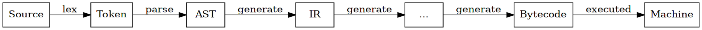
lua 是解释型语言，但同样存在从源码到字节码的编译过程，区别在于其运行在 VM 上。
经过历史的演变，lua 的内部实现为了效率，遵从如下的过程。
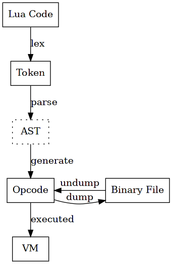
AST 使用虚线表示，是因为内部没有显式的 AST 结构。
综合来看，lexer 完成了从 code 到 token 的过程， parser 孤身一人完成了从 token 到 opcode 的过程。
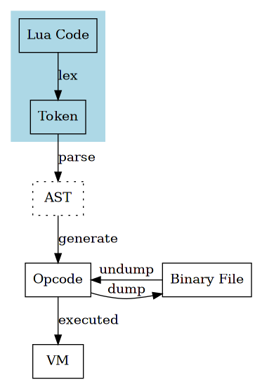
单纯从从文件角度看，lua 代码只是文本文件，由字符组成。 文本形式的编程语言由机器理解并执行，需要经过一系列组件的处理过程。 不同组件有明确的分工，不同的组件有不同的输入和输出，组成上下游关系。
lexer 通常是第一个组件，将源代码转换为 token，将字符流转化为 token 流，作为后续 parser 的输入。
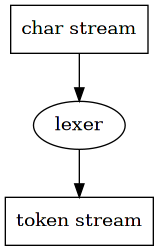
2 Token
简单的说，token 就是多个字符组成的有序序列。
lua 内部用 struct 表示 token，
43: typedef union { 44: lua_Number r; 45: TString *ts; 46: } SemInfo; /* semantics information */ 47: 48: 49: typedef struct Token { 50: int token; 51: SemInfo seminfo; 52: } Token;
2.1 int token
token 定义为 int，表示 Token 的类型，所有类型定义在 enum 结构中。
14: #define FIRST_RESERVED 257 15: 16: /* maximum length of a reserved word */ 17: #define TOKEN_LEN (sizeof("function")/sizeof(char)) 18: 19: 20: /* 21: * WARNING: if you change the order of this enumeration, 22: * grep "ORDER RESERVED" 23: */ 24: enum RESERVED { 25: /* terminal symbols denoted by reserved words */ 26: TK_AND = FIRST_RESERVED, TK_BREAK, 27: TK_DO, TK_ELSE, TK_ELSEIF, TK_END, TK_FALSE, TK_FOR, TK_FUNCTION, 28: TK_IF, TK_IN, TK_LOCAL, TK_NIL, TK_NOT, TK_OR, TK_REPEAT, 29: TK_RETURN, TK_THEN, TK_TRUE, TK_UNTIL, TK_WHILE, 30: /* other terminal symbols */ 31: TK_CONCAT, TK_DOTS, TK_EQ, TK_GE, TK_LE, TK_NE, TK_NUMBER, 32: TK_NAME, TK_STRING, TK_EOS 33: };
每个 token 类型都有对应的文本表示，
36: /* ORDER RESERVED */ 37: const char *const luaX_tokens [] = { 38: "and", "break", "do", "else", "elseif", 39: "end", "false", "for", "function", "if", 40: "in", "local", "nil", "not", "or", "repeat", 41: "return", "then", "true", "until", "while", 42: "..", "...", "==", ">=", "<=", "~=", 43: "<number>", "<name>", "<string>", "<eof>", 44: NULL 45: };
and到while之间是所有关键字..到~=之间是二元运算符<number>表示数字字面量<name>表示变量名称<string>表示字符串字面量<eof>表示文件结束符
在上面所有类型中，看不到单字符 token 的影子，如 ( , . ; [ 。
这是因为单字符用单字节 ascii 码表示（0 - 255），可以直接用自身来表示，记录在 int token 中。
这也是多字符 token 从 FIRST_RESERVED 257 开始的原因，巧妙的将两者分开。
2.2 Seminfo
Seminfo 用于存储 token 类型对应的内容。
对于单字符，关键字和二元运算符，不需要记录额外内容，因为类型的文本表示是唯一的。
<number> <name> <string> 则不同，相应类型下存在无数可能的内容，这就是 seminfo 的作用。
lua_Number r用来记录<number>相应的内容TString *ts用来记录<name>变量的名称，<string>字符串内容
3 LexState
lex 是一个过程，过程中需要记录当下所处的状态，比如文件读取的位置，匹配的结果等， 这个关键的数据结构就是 LexState。
整个 lex 过程围绕 LexState 展开，这样说毫不为过，清楚其有非常大的助益。
55: typedef struct LexState { 56: int current; /* current character (charint) */ 57: int linenumber; /* input line counter */ 58: int lastline; /* line of last token `consumed' */ 59: Token t; /* current token */ 60: Token lookahead; /* look ahead token */ 61: struct FuncState *fs; /* `FuncState' is private to the parser */ 62: struct lua_State *L; 63: ZIO *z; /* input stream */ 64: Mbuffer *buff; /* buffer for tokens */ 65: TString *source; /* current source name */ 66: char decpoint; /* locale decimal point */ 67: } LexState;
将其中所有字段分为 3 部分
lex 过程的重要部分
ZIO *z，源代码文件流Mbuffer *buff，lex 匹配过程中的 bufferint current，当前 token 之后紧跟的字符Token t，当前 tokenToken lookahead，前瞻的下一个 token
在 parser 章节再讨论
struct FuncState *fsstruct lua_State *L
非重点，暂不讨论
int linenumber，当前 current 所处行号int lastline，上一个 token 所处行号TString *source，源代码的名称char decpoint，和数字的 l10n 相关
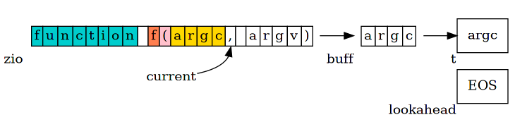
内部数据间的协同，在 method 小节继续讲述。
4 method
4.1 luaX_init
前面在 string 章节，关于其中 reserved 字段的作用没有讲述，刚好在 lexer 章节补上。
35: /* number of reserved words */ 36: #define NUM_RESERVED (cast(int, TK_WHILE-FIRST_RESERVED+1))
64: void luaX_init (lua_State *L) { 65: int i; 66: for (i=0; i<NUM_RESERVED; i++) { 67: TString *ts = luaS_new(L, luaX_tokens[i]); 68: luaS_fix(ts); /* reserved words are never collected */ 69: lua_assert(strlen(luaX_tokens[i])+1 <= TOKEN_LEN); 70: ts->tsv.reserved = cast_byte(i+1); /* reserved word */ 71: } 72: }
之前提到，string 在 lua 内部只保存一份，是不可修改的。
luaX_init 将所有关键字（如 local function end 等）预先分配，存储入全局表。
特别的，在其 reserved 字段上记录其在 enum RESERVED 中的序号，从 1 开始。
这样带来的效果是，所有 reserved != 0 的 string 都是关键字，且可以由 reserved 来判断出关键字的 token 类型。
这一点间接方便了 luaX_next 中，关键字类型 token 的判断过程。
4.2 llex
本质上来看，lexer 就是遵循些许模式，从字符流的头部开始匹配，找到并返回相匹配的 token。
不同 token 的模式通常用 regex 来描述，将所有的模式转化为代码的形式，就是 lex 过程。
一般而言，这是一个相对枯燥又考验耐心的工作，好在有 lexer generator 这样的工具，如 flex， 它可以直接将 regex 规则转化为 lex 代码。
一般而言，一个语言的诞生初期，都会使用 lexer generator，方便快速迭代， 到了后期语言本身相对稳定的时候，为了提升效率，都会将 lex 过程重写，python ruby lua 都是如此。
这也意味着，阅读 lua 中 lex 过程的代码不如同义的 flex 代码1轻松。
lex 过程看似随意，底层其实有充足的数学理论支撑， regex NFA DFA 的同义转化，最终用代码方式呈现。
这一点远有更专业的书来讲解，具体细节就不再赘述。
lexer 内部的核心方法就是 llex。
334: static int llex (LexState *ls, SemInfo *seminfo) { 335: luaZ_resetbuffer(ls->buff); 336: for (;;) { 337: switch (ls->current) { 338: case '\n': 339: case '\r': { 340: inclinenumber(ls); 341: continue; 342: } 343: case '-': { 344: next(ls); 345: if (ls->current != '-') return '-'; 346: /* else is a comment */ 347: next(ls); 348: if (ls->current == '[') { 349: int sep = skip_sep(ls); 350: luaZ_resetbuffer(ls->buff); /* `skip_sep' may dirty the buffer */ 351: if (sep >= 0) { 352: read_long_string(ls, NULL, sep); /* long comment */ 353: luaZ_resetbuffer(ls->buff); 354: continue; 355: } 356: } 357: /* else short comment */ 358: while (!currIsNewline(ls) && ls->current != EOZ) 359: next(ls); 360: continue; 361: } 362: case '[': { 363: int sep = skip_sep(ls); 364: if (sep >= 0) { 365: read_long_string(ls, seminfo, sep); 366: return TK_STRING; 367: } 368: else if (sep == -1) return '['; 369: else luaX_lexerror(ls, "invalid long string delimiter", TK_STRING); 370: } 371: case '=': { 372: next(ls); 373: if (ls->current != '=') return '='; 374: else { next(ls); return TK_EQ; } 375: } 376: case '<': { 377: next(ls); 378: if (ls->current != '=') return '<'; 379: else { next(ls); return TK_LE; } 380: } 381: case '>': { 382: next(ls); 383: if (ls->current != '=') return '>'; 384: else { next(ls); return TK_GE; } 385: } 386: case '~': { 387: next(ls); 388: if (ls->current != '=') return '~'; 389: else { next(ls); return TK_NE; } 390: } 391: case '"': 392: case '\'': { 393: read_string(ls, ls->current, seminfo); 394: return TK_STRING; 395: } 396: case '.': { 397: save_and_next(ls); 398: if (check_next(ls, ".")) { 399: if (check_next(ls, ".")) 400: return TK_DOTS; /* ... */ 401: else return TK_CONCAT; /* .. */ 402: } 403: else if (!isdigit(ls->current)) return '.'; 404: else { 405: read_numeral(ls, seminfo); 406: return TK_NUMBER; 407: } 408: } 409: case EOZ: { 410: return TK_EOS; 411: } 412: default: { 413: if (isspace(ls->current)) { 414: lua_assert(!currIsNewline(ls)); 415: next(ls); 416: continue; 417: } 418: else if (isdigit(ls->current)) { 419: read_numeral(ls, seminfo); 420: return TK_NUMBER; 421: } 422: else if (isalpha(ls->current) || ls->current == '_') { 423: /* identifier or reserved word */ 424: TString *ts; 425: do { 426: save_and_next(ls); 427: } while (isalnum(ls->current) || ls->current == '_'); 428: ts = luaX_newstring(ls, luaZ_buffer(ls->buff), 429: luaZ_bufflen(ls->buff)); 430: if (ts->tsv.reserved > 0) /* reserved word? */ 431: return ts->tsv.reserved - 1 + FIRST_RESERVED; 432: else { 433: seminfo->ts = ts; 434: return TK_NAME; 435: } 436: } 437: else { 438: int c = ls->current; 439: next(ls); 440: return c; /* single-char tokens (+ - / ...) */ 441: } 442: } 443: } 444: } 445: }
它的功能非常纯粹，从字符流的开始，进行模式匹配，找到相应的 token，并返回相应的类型和内容。
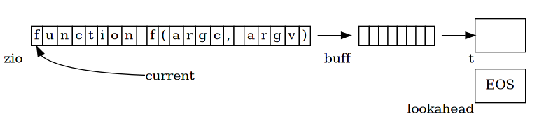
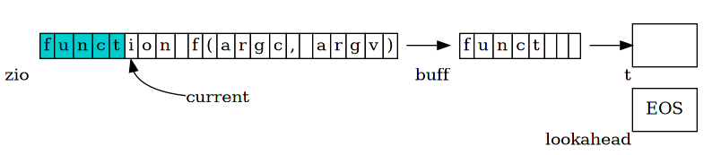
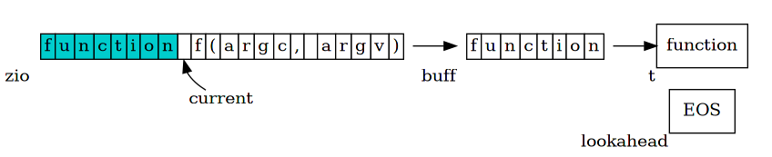
llex 的具体过程不再赘述，读者可以打开调试器，用一些代码示例来针对性的阅读。
这里只略微提几个值得关注的点。
4.2.1 keyword
关键字的匹配过程，和 <name> 的匹配过程统一在一起。
不过是在最终得到匹配结果时，通过 reserved 字段来判断，是否是关键字。
之所以可以做到这一点是因为，所有 string 在全局表中都是唯一的，
而且 luaX_init 已经提前设置了所有的关键字。
422: else if (isalpha(ls->current) || ls->current == '_') { 423: /* identifier or reserved word */ 424: TString *ts; 425: do { 426: save_and_next(ls); 427: } while (isalnum(ls->current) || ls->current == '_'); 428: ts = luaX_newstring(ls, luaZ_buffer(ls->buff), 429: luaZ_bufflen(ls->buff)); 430: if (ts->tsv.reserved > 0) /* reserved word? */ 431: return ts->tsv.reserved - 1 + FIRST_RESERVED; 432: else { 433: seminfo->ts = ts; 434: return TK_NAME; 435: } 436: }
这个巧妙的过程，意味着关键字的优先级高于标识符。
定义与关键字同名的变量是不可能的，因为它会被辨别为是关键字，引发语法错误。
local end = 1
4.2.2 number
理想情况下，token 类型的识别在前，类型确定后，再来提取相应的内容。
但是对于 <number> 并不是这样来处理的。
193: /* LUA_NUMBER */ 194: static void read_numeral (LexState *ls, SemInfo *seminfo) { 195: lua_assert(isdigit(ls->current)); 196: do { 197: save_and_next(ls); 198: } while (isdigit(ls->current) || ls->current == '.'); 199: if (check_next(ls, "Ee")) /* `E'? */ 200: check_next(ls, "+-"); /* optional exponent sign */ 201: while (isalnum(ls->current) || ls->current == '_') 202: save_and_next(ls); 203: save(ls, '\0'); 204: buffreplace(ls, '.', ls->decpoint); /* follow locale for decimal point */ 205: if (!luaO_str2d(luaZ_buffer(ls->buff), &seminfo->r)) /* format error? */ 206: trydecpoint(ls, seminfo); /* try to update decimal point separator */ 207: }
如果用 regex 来表示这个过程，则是 [\.[:digit:]]+[Ee[+-]?]?[[:alnum:]_]* ，
这个模式并不能完全匹配数字。
local i = .3.3.3
.3.3.3 可以匹配相应模式，但是并不是数字。
庆幸的是 lua 依旧发现这个错误，
malformed number near '.3.3.3'
lua 内部使用 <stdlib.h> 中的 strtod 来尝试进行 string 到 number 的转换。
如果发生错误，则说明不是数字。
525: #define lua_str2number(s,p) strtod((s), (p))
看起来这并不合常规，因为 lua 只是粗略匹配了一段“像是 number”的内容，通过 strtod 来做最终判断， 感觉有些取巧。
4.2.3 long string
lua 中可以用 [[]] 来表示长字符串，但是存在一种变体，比较少见，
形式如 [===[ ]===] 也是长字符串， = 的数量要完全相同。
长字符串的规则，加上 -- 就可以扩充到长注释。
local long_str = [[ this is a long string. ]] local another_str = [===[ another long string. ]===] --[[ comment this line ]] --[====[ comment this line ]====]
这一点在阅读代码时要注意。
4.2.4 builtin
next, require 等不是关键字，而是运行环境中提供的函数，它们的功能是在 VM 中实现的。
这一点在后续 api 章节会讲到。
4.3 luaX_lookahead
在语法分析的过程中，存在少数情况，需要下一个 token 来去除多个模式间的歧义。
luaX_lookahead 就是在这个时候使用，
459: void luaX_lookahead (LexState *ls) { 460: lua_assert(ls->lookahead.token == TK_EOS); 461: ls->lookahead.token = llex(ls, &ls->lookahead.seminfo); 462: }
过程很简单，使用 llex 方法，将 token 存储在 LexState.lookahead 中。
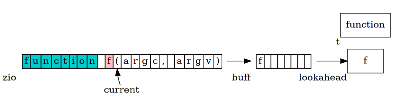
4.4 luaX_next
luaX_next 和 luaX_lookahead 相同，不过是将 token 存储在 LexState.t 中。
如果 lookahead 中存在 token，则直接拿过来使用，并重置 lookahead。
448: void luaX_next (LexState *ls) { 449: ls->lastline = ls->linenumber; 450: if (ls->lookahead.token != TK_EOS) { /* is there a look-ahead token? */ 451: ls->t = ls->lookahead; /* use this one */ 452: ls->lookahead.token = TK_EOS; /* and discharge it */ 453: } 454: else 455: ls->t.token = llex(ls, &ls->t.seminfo); /* read next token */ 456: }
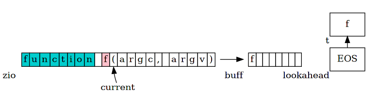
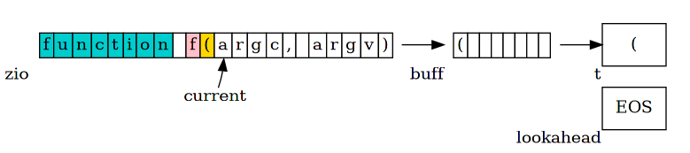
5 a little lexer
根据对 lex 模块的理解，可以做一个简单的 lexer 分析器。
它不是一个独立的程序，而是一段 gdb 脚本，gdb 可以在 lua 在运行时进行 inspect。
在 luaX_next 方法加上断点，每次触发的时候，就输出相应的 token，就可以实现一个简单的 lexer 工具。
$ make -s lex source=./test/co.lua
这种做法有些许弱点，如果中途出现语法错误，过程就会中断，所以它只能分析语法分析正确的代码。
6 practice
| 文件 | 建议 |
|---|---|
| lzio.h | zio 模块中实现了 zio 和 mbuffer 结构，对字符流和 buffer 进行了封装，感兴趣的读者可仔细阅读 |
| lzio.c | 同上 |
| llex.h | 仔细阅读 |
| llex.c | 浏览阅读，配合调试器会更轻松 |